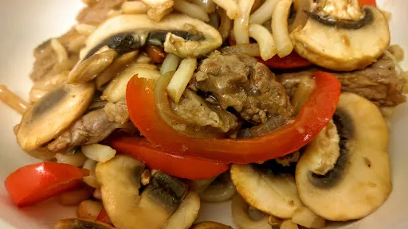

Five spice beef noodles

Servings: 2
Total: 25 mins
Ingredients
- 1 tbsp oil
- 350 g rump, sirloin or topside beef, cut into stips
- ½ onion, sliced
- 1 small red or green pepper, thinly sliced
- 1 tsp grated fresh ginger
- 1 clove garlic
- 6 mushrooms, sliced
- ½ tsp five spice powder
- 1x pack fresh or ready-to-wok egg noodles
Sauce
- ¼ mug hoisin sauce
- 1 tbsp soy sauce
- 1 tbsp wine vinegar
- 1 tbsp water
Instructions
- Heat the
oil1 tbsp
in a wok. Add the beef350 g
stips and cook on a high heat for 2-3 minutes. Remove from the pan and set to one side.
- Add the
onion½
, garlic1 clove
, pepper1 small
and ginger1 tsp
to the pan. Stir fry for 1-2 minutes on high heat.
- Add the
mushrooms6
and five spice powder½ tsp
. Cook for 1 minute on high heat.
- Return the
beef350 g
to the pan with the sauce ingredients and the nooddles. Cook on high heat for 1 minute until everything is heated through.
- Serve immediately.
Nosh for graduates
Short Link
Long Link